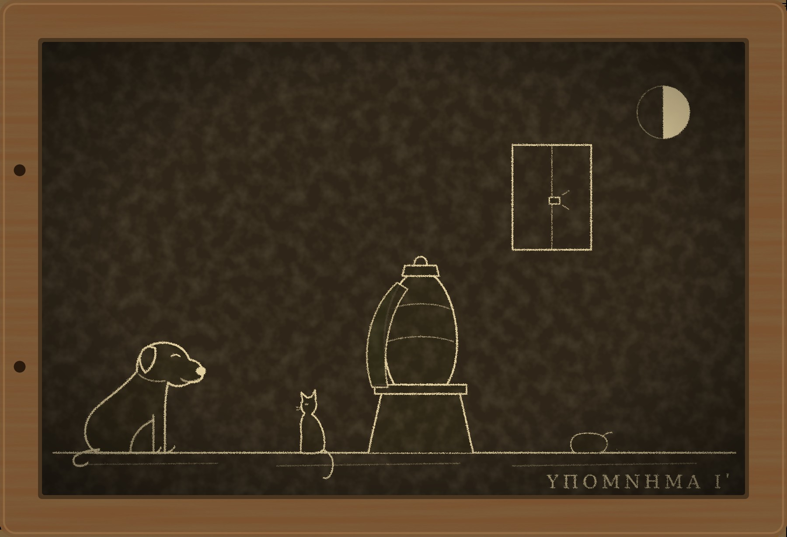

Гипомнема X Пепел

I
Весть о смерти Августа пришла в Рим в начале весны, с гонцом, который загнал трёх лошадей между Брундизием и Капуей и упал с четвёртой у Капенских ворот. Через час о ней знал Палатин, через два сенат, к вечеру Субура. Гордиан, Август, девятнадцати лет, умер на Евфрате после сражения с персами. Как именно умер, гонец не знал или не сказал. Он знал другое: войско в тот же день провозгласило Августом префекта претория Филиппа, гвардия признала его не сходя с места, и новый Август уже ведёт с персами переговоры о мире.
В рыбной лавке у Тусской улицы, где я беру рыбу для Пами, торговец сказал мне, что так и должно быть. Гвардия присягала Августу, а не мальчику. Это знает теперь весь Рим: после того как хранитель присяги умер до луны, все поняли, что имени в ней не было. Значит, гвардия перешла к новому Августу так же, как переходит вода из одного кувшина в другой, и никто ей в этом не помешал. Хорошая была присяга, сказал торговец, Рим давно такой ждал.
Я принёс рыбу домой, Пами съел её, а я сел к окну.
Два года назад Евмен сказал мне на Палатине: «Когда мальчик умрёт, это пригодится». Я слышал тогда в этих словах угрозу и ошибся. Это было не угрозой, а расчётом, и расчёт сошёлся. Евмен ушёл на восток в свите префекта. Префектом тогда был тесть Августа Тимесифей. В прошлом году Тимесифей умер в походе, и никто в Риме толком не знает от чего. Префектом стал Филипп. Евмен остался при префекте. Теперь префект стал Августом, и присяга, которую Евмен два года подтачивал, перенесла гвардию к нему без единого слова.
Вечером пришёл Никанор. Он знал всё, что знал я, и ещё немного: в коллегии говорили, что войско шло вверх по Евфрату, что у крепости на реке был бой, что Август был ранен. Больше никто ничего не знал.
— Если бы в присяге было имя, — сказал Никанор, — гвардия сейчас была бы свободна. Присяга умерла бы вместе с мальчиком, как умерла присяга Пупиену и Бальбину.
— И могла бы выбирать, — сказал я. — А так выбрали за неё.
— Евмен?
— Евмен ничего не выбирал. Он сделал так, чтобы выбирать было не нужно. Кто был префектом в день смерти Августа, тот и стал Августом. Если бы префектом был другой, Августом стал бы другой.
Никанор помолчал.
— Диодор умер за то, чтобы это стало возможным, — сказал он. — И даже не знал за что.
Ферокс лежал у двери. Он не любит, когда в комнате говорят тихо и подолгу, и потому вздыхал. Пами спал на балке, сытый. Я смотрел на Капитолий, где над храмом стояла половина луны, и думал, что впервые за много лет не знаю, сколько ночей до новолуния. Это было мне безразлично. Мальчик на Евфрате никому ни в чём не клялся.
II
Прах Августа привезли в Рим в середине лета.
Филипп заключил с персами мир, заплатил им, как говорили, полмиллиона денариев, отдал им Армению и Месопотамию и на обратном пути поставил на Евфрате пустую гробницу в память Гордиана. Тело сожгли там же. Урну с прахом новый Август отправил в Рим впереди себя, с письмом к сенату и с почётной охраной из двадцати гвардейцев, которые были при Гордиане в последний день.
Урну встретили у Капенских ворот сенат, коллегии жрецов и полгорода. Я стоял в толпе на Аппиевой дороге и видел, как её несли: небольшую, порфировую, на носилках, под пурпурным покровом. Рядом шёл старый центурион с седой головой, не глядя по сторонам. Позади шли двадцать гвардейцев в чистых плащах. Их лица ничего не выражали, как ничего не выражают лица солдат, которых долго учили, что выражать.
Письмо Филиппа сенату огласили в курии на другой день, и через час его пересказывал весь Форум. Август просил сенат признать Гордиана богом. И ещё он просил, чтобы сенат выслушал клятвы тех, кто был при Гордиане в последний день, «дабы Рим знал, что божественный Гордиан пал от раны, полученной в бою с врагами Рима, а не от руки римлянина». Слух, что Гордиана убили свои, пришёл в Рим раньше урны, и Филипп хотел, чтобы этот слух умер раньше, чем он сам войдёт в город.
Формулу клятвы Август прислал с востока, вместе с письмом. Её составили в канцелярии префекта. Кто именно, письмо не говорило. Никанор сказал мне это вечером, а утром старейший подтвердил: составлял её страж при дворе по части формул.
Хранить клятвы коллегия поставила меня и Никанора. Людей в коллегии теперь не хватает: Диодора нет, двое стариков умерли зимой, а молодых за последние годы приняли мало, потому что стражем слов в Риме становиться стало опасно. Старейшие рассудили, что вернувшийся страж и его бывший ученик лучше всех знают присягу, о которой теперь пойдёт речь, и, вероятно, были правы.
Формула была короткая, как всё, что составлял Евмен:
— «Я был при Августе Гордиане в последний день его жизни. Я не видел, чтобы римлянин поднимал на него руку. Клянусь в этом перед алтарём Победы».
Я выслушал её от Никанора один раз и запомнил, как запоминаю всё. И, запомнив, услышал в ней то, что в ней было.
«Я не видел». Формула не спрашивала, поднимал ли кто-нибудь руку на Августа. Она спрашивала, видел ли это клянущийся. Свидетель, которого в ту ночь отослали от шатра, поклянётся и доживёт до луны, потому что не видел. Свидетель, который стоял у входа и видел, кто вошёл, но не видел, что было внутри, тоже поклянётся и доживёт. Свидетель, который видел, не поклянётся или поклянётся и умрёт. Но таких, вероятно, в охране урны не было. Тех, кто видел, на запад не посылают.
— Щель, — сказал Никанор, когда я ему это объяснил.
— Не щель, — сказал я. — Это и есть формула. Евмен не оставляет щелей. Он строит из них.
III
Клялись в курии, у алтаря Победы, на третий день после того, как урна вошла в город.
Свидетелей было двое: старый центурион, Аврелий Валент, и молодой гвардеец, фракиец Мукапор. Валент был при Гордиане телохранителем с первого года его правления, водил его в первый поход и, по слухам, учил его сидеть на коне. Мукапору было двадцать лет. Он попал в гвардию два года назад, перед самым походом, и стоял в ту ночь у шатра Августа в карауле.
Сенат сидел на скамьях молча. Я стоял у алтаря с одной стороны, Никанор с другой, сложив руки. Жрец поднёс огонь.
Валент вышел первым. Он произнёс формулу так, как произносят солдаты: громко, ровно, не останавливаясь там, где остановился бы оратор. Голос у него сел на слове «Гордиане» и больше не поднялся. Он закончил почти шёпотом, отступил на шаг и встал неподвижно, глядя поверх скамей.
Мукапор вышел вторым. Он был высокий, широкоплечий, с курчавой бородой, какие носят во Фракии, и я видел, что он боится. Не алтаря и не сената, а того, что за ним наблюдает весь Рим. Он произнёс первую фразу правильно. На второй запнулся перед словом «видел», начал снова и произнёс её до конца, слишком быстро. Третью сказал хорошо.
Никанор потом говорил мне, что запинку слышал весь сенат. Я в этом не уверен. Сенаторы слушают не так, как стражи: они слушают, что сказано, а не как. Но двое из них, сидевшие в третьем ряду, переглянулись. Я запомнил их лица, потому что запоминаю всё.
До луны оставалось двадцать три ночи.
Валент поднялся ко мне на другой вечер. Он шёл по лестнице тяжело, как ходят старые солдаты, у которых болят колени, и считал ступени. На деревянном пролёте он сказал вслух: «Одиннадцать», — и остановился перед дверью.
Ферокс бросился к нему, как ко всем, и Валент, не задумываясь, сказал:
— Сидеть.
Ферокс сел. Так он садится только перед людьми из лагеря. Пами на балке открыл один глаз.
Валент вошёл, сел на табурет и долго молчал.
— Мне сказали, что ты один в Риме знаешь, за что карают боги, — сказал он наконец. — Так говорил в лагере трибун Приск. Его убили свои, но гвардия запомнила, что он сказал.
— Что ты хочешь знать?
— Доживу ли я.
— Ты сказал правду?
— Я сказал то, что было в формуле. Я не видел, чтобы на Августа поднимали руку. — Он сжал колени ладонями. — В ту ночь меня отослали. Пришёл человек из шатра префекта и передал, что Август велит мне ехать к реке и проверить посты. Я ездил полночи. Когда я вернулся, у шатра стояли другие, не наши. Мне сказали, что Август умер от раны. Рана у него была, от персидской стрелы, в левое предплечье, неглубокая. Вечером я сам видел, как лекарь её перевязал, и Август при мне сжимал и разжимал пальцы, чтобы показать, что рука слушается. От таких ран не умирают за одну ночь.
— Ты не видел, — сказал я.
— Не видел. Но я знаю. Страж, я поклялся в том, что не видел, и это правда. Но я знаю, что его убили, и знаю, что меня отослали, чтобы я не видел. Скажи мне, я солгал?
Я молчал долго, дольше, чем он. Я думал о Диодоре, который не знал, лгал ли он, и пятнадцать ночей считал. Я думал о том, что знаю, а чего не знаю. По нашему закону клянутся формулой, а не смыслом. Формулу Валент сказал верно. По тому, что я пятнадцать лет считаю законом богов, они спрашивают за то, во что человек верил, открывая рот. Валент верил, что не видел. И по тому, чему меня научил Диодор, человека убивает не формула и, может быть, не боги, а то, что он ложится и считает.
— Ты сказал правду формулы, — сказал я. — Боги спрашивают за то, во что ты верил, когда говорил. Ты верил, что не видел.
— Значит, доживу?
— Не считай, — сказал я. — Не считай ночей. Если начнёшь считать, считай что-нибудь другое. Ступени. Шаги до ворот. Посты, которые проверял той ночью. Только не ночи.
Он посмотрел на меня так, как, вероятно, смотрел на Гордиана, когда тот впервые сел на коня.
— Это всё?
— Это всё, что я знаю.
Он ушёл. На лестнице я слышал, как он считает вслух, вниз: одиннадцать, десять, девять. Дальше, на каменных пролётах, он, вероятно, продолжал про себя.
Пами спустился с балки и сел на табурет, ещё тёплый.
— Ты сказал ему то, что сказал бы тот, со сложенными руками, — заметил кот.
— Нет. Тот сказал бы ему считать.
— Тот сказал бы ему то, что ему нужно, — сказал Пами. — Ты тоже.
IV
Мукапора нашли мёртвым за шесть ночей до луны.
Охрану урны поселили не в лагере, а в доме у Капенских ворот, который сенат снял для них до прибытия Августа. Мукапор жил в комнате с двумя другими гвардейцами, но в ту ночь они были в карауле при урне, и он спал один. Утром его нашли на постели, на спине, с запёкшейся кровью под носом и в ушах. Ран на нём не было.
К полудню Рим знал, что гвардеец, запнувшийся у алтаря Победы, умер до луны. К вечеру Рим знал, что это значит. Гвардеец солгал. Значит, видел. Значит, на Гордиана подняли руку римляне. Значит, тот, кто через месяц войдёт в Рим Августом, убил своего Августа. Двое сенаторов из третьего ряда, которых я запомнил, на следующий день предложили курии отложить обожествление Гордиана и встречу Филиппа до тех пор, пока сенат не узнает правды. Курия зашумела, как не шумела, говорят, со времён Максимина.
Я пришёл в дом у Капенских ворот с Фероксом, когда тело ещё не унесли. Двое гвардейцев, которые жили с Мукапором, стояли в дверях и не пускали никого, но, узнав во мне хранителя его клятвы, пропустили.
Мукапор лежал так, как его нашли. Кровь под носом. Кровь в ушах. Лицо спокойное, без синевы, без следов на шее. Так умирают от удара, когда в голове что-то лопается, и старые лекари называют это гневом богов, потому что объяснить это иначе не умеют.
Ферокс обошёл постель, потом подушку, потом нагнулся к полу у изголовья и долго нюхал щели между досками.
— Мокрый песок, — сказал он. — Речной. И кожа. Хорошая кожа, мягкая, какую носят те, кто не ходит пешком. Пахнет у головы. Здесь, у пола, песок просыпался.
Я опустился на колени. Между досками у изголовья лежало несколько крупинок песка, серого, речного, с блёстками слюды.
Мешочек с мокрым песком, обтянутый кожей, — оружие ночных грабителей в Субуре. Им бьют по голове, и человек падает без единой раны, а если бить по виску и затылку несколько раз, у него лопается в голове то, что лекари не видят, и он умирает к утру, с кровью из носа и ушей, как от удара. Такую смерть в Риме принимают за кару, если человек перед тем поклялся.
Пами вошёл через окно, как всегда, прошёл по подоконнику и сел у ставня.
— Ставень закрыли снаружи, — сказал он. — Задвижку подцепили ножом, видишь царапины. А потом закрыли снова, тоже снаружи. Изнутри так не закрывают, изнутри задвижку бросают как попало. Тот, кто это сделал, был аккуратный и привык закрывать за собой.
Гвардейцы в дверях не видели и не слышали ничего. Хозяин дома видел вечером двоих в хороших плащах, которые спрашивали, где живёт фракиец, и сказал им, потому что они сказали, что принесли ему письмо от родных. Лиц он не запомнил. Запомнил, что у одного на пальце было кольцо с печатью, какие носят клиенты сенаторских домов.
V
Валент пришёл ко мне снова, на следующий вечер, и на этот раз Ферокса не сажал.
— Мукапор видел, — сказал он с порога.
Я молчал.
— Он сказал мне в пути, на корабле от Селевкии. Ночью, когда мы стояли на корме. Он сказал, что видел, кто вошёл в шатёр Августа после того, как меня отослали. Он стоял у входа в карауле. Он видел, кто вошёл, и видел, кто вышел, и через час изнутри вынесли Августа. Он не видел, что было внутри. Он мне это сказал, а потом сказал, что поклянётся, как велено, потому что того, что внутри, он не видел, а формула спрашивает только об этом.
— Кто вошёл?
— Он не сказал. Сказал, что если скажет, то я тоже буду знать, а мне лучше не знать, потому что мне клясться первым.
Валент сел на табурет и закрыл лицо руками.
— Значит, он не солгал, — сказал он из-под рук. — Формула спрашивала, видел ли он, чтобы поднимали руку. Он не видел руки. Он видел людей. Почему же он умер?
— Его убили, — сказал я.
Валент поднял голову.
— Люди?
— Люди. Двое, в хороших плащах, с мешочком песка. Ночью, через окно.
— Кто?
— Те, кому нужно, чтобы Рим поверил, будто Мукапор солгал.
Он понял не сразу, а когда понял, лицо у него стало серым.
— Сенаторы, — сказал он. — Им нужно, чтобы Август оказался убийцей. Чтобы не пускать его в город.
— Им нужно, чтобы Рим увидел кару. Кара доказывает лучше свидетелей. Свидетеля можно не услышать, а мёртвого до луны видит весь город.
— А если бы его не убили? Он дожил бы?
Этого я не знал. Мукапор, как и Валент, сказал правду формулы. Но в отличие от Валента он знал больше, чем говорила формула, и запнулся у алтаря именно на слове «видел». Может быть, он запнулся потому, что верил, что лжёт. Может быть, потому что боялся сената. Может быть, он считал ночи, как Диодор, а может быть, фракийцу, у которого свои боги, наша луна ничего не говорит. Я не знал, умер бы он сам или нет. И теперь этого не узнает никто.
— Не знаю, — сказал я.
— Ты всё знаешь, — сказал Валент. — Так говорил Приск.
— Приск ошибался.
VI
Двоих в хороших плащах взяли через четыре дня. Хозяин дома у Капенских ворот узнал печать на кольце, когда ему показали печати клиентов тех двух сенаторов из третьего ряда. У одного клиента нашли кожаный мешочек, ещё сырой, с речным песком. Песок был со слюдой, серый, такой, каким засыпают двор в доме его патрона у Тибра. Клиент сознался у городского префекта, не дожидаясь, пока его спросят по-другому. Сенаторы сказали, что ничего не знали и что клиенты действовали сами, а когда им предложили поклясться в этом, отказались. Отказ не запрещён. Но после отказа их в курии не слушали.
Я сказал сенату то, что был обязан сказать как хранитель клятвы Мукапора: гвардеец умер не от кары, а от руки человека, и потому его клятва стоит. Сенат выслушал меня и успокоился, как успокаивается вода, когда в неё перестают бросать камни.
Рим рассудил так. Гвардеец не лгал. Значит, не видел, чтобы на Августа поднимали руку. Значит, Гордиан пал от раны. Значит, слух ложный, и новый Август чист. Обожествление назначили на тот день, когда Филипп войдёт в город.
Это рассуждение было неверным в каждом звене, кроме первого. Я знал это, и Валент знал это. Мукапор не лгал по формуле, но видел, кто вошёл в шатёр. Гордиан, может быть, и пал от раны, а может быть, и нет. Новый Август, может быть, и чист, а может быть, и нет. Я сказал сенату правду, и правда моя очистила человека, о котором я ничего не знаю, и похоронила то, что видел мёртвый фракиец. Евмен служил Филиппу, не говоря ни слова лжи. Я послужил ему тем же способом.
Валент мог бы рассказать сенату, что говорил ему Мукапор на корабле. Он мог бы поклясться в этом, и это была бы правда. Я спросил его, хочет ли он. Он долго молчал.
— У меня жена в Сирмии, — сказал он. — И два сына. Если я скажу, кто-нибудь придёт ко мне ночью с мешочком. Если не скажу, доживу до луны. Ты сам велел мне не считать ночи. Я не считаю. Я считаю сыновей.
Я не стал его уговаривать. В Риме и без меня хватает людей, которые решают за других, что им лучше.
VII
Филипп вошёл в Рим в конце лета. Его встречали у Капенских ворот сенат, жрецы и полгорода, как полтора месяца назад встречали урну. Я стоял на Аппиевой дороге в толпе. Август был смуглый, плотный человек лет сорока, с короткой бородой и тяжёлым взглядом, и смотрел на Рим, как смотрят на город, который купили, ещё не видев.
В его свите, среди писцов и канцелярии, ехал человек на смирной лошади, с обыкновенным лицом. Руки он держал на коленях, поверх поводьев. Он увидел меня в толпе, и я увидел, что он меня увидел. Он не кивнул. Он смотрел на меня так же, как смотрел за нашим столом восемь лет: ожидая, что я заговорю первым. Я не заговорил, и он проехал.
В тот же день сенат объявил Гордиана богом.
Валент ушёл из гвардии с первой же выплатой, которую Август раздал солдатам, и уехал в Сирмий, к жене и сыновьям. Перед отъездом он поднялся ко мне ещё раз, не сажая Ферокса, и сказал, что дожил до луны и что на пятую ночь перестал думать о ней совсем, потому что начал думать о дороге. Я спросил, почему он пришёл сказать мне это. Он ответил, что у солдат принято докладывать тому, кто дал приказ.
Вечером я достал табличку «Чужие кары» и записал тринадцатое дело: «Мукапор, фракиец, гвардеец. Убит мешочком с песком клиентами сенаторов. За кару приняли сенаторы, Рим поверил. Я доказал, что не кара, и Рим поверил в другое, что тоже неправда».
На обороте я прибавил четвёртую строку, под тремя прежними: «Валент, центурион. Знал больше формулы. Я сказал ему: не считай. Жив».
Ферокс спал у двери. Пами сидел на столе и смотрел на табличку.
— У тебя на обороте теперь больше, чем на лицевой стороне, — сказал он.
— На лицевой тринадцать дел.
— На лицевой — чужие. На обороте — твои. Ты сам их так назвал.
Я перечитал оборот. Никанор, которого я заставил поверить. Сосикл, который солгал и жив. Диодор, которого убил счёт или боги. Валент, которому я велел не считать. Четыре строки, и в каждой я либо сделал то, что делает Евмен, либо узнал то, что знает Евмен, либо не смог сказать, прав ли Евмен.
Луна, которую ждал Валент, к тому времени давно прошла. Следующая была далеко. Я не считал.